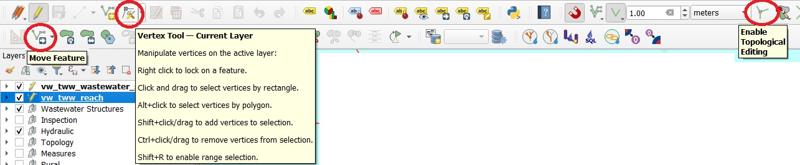
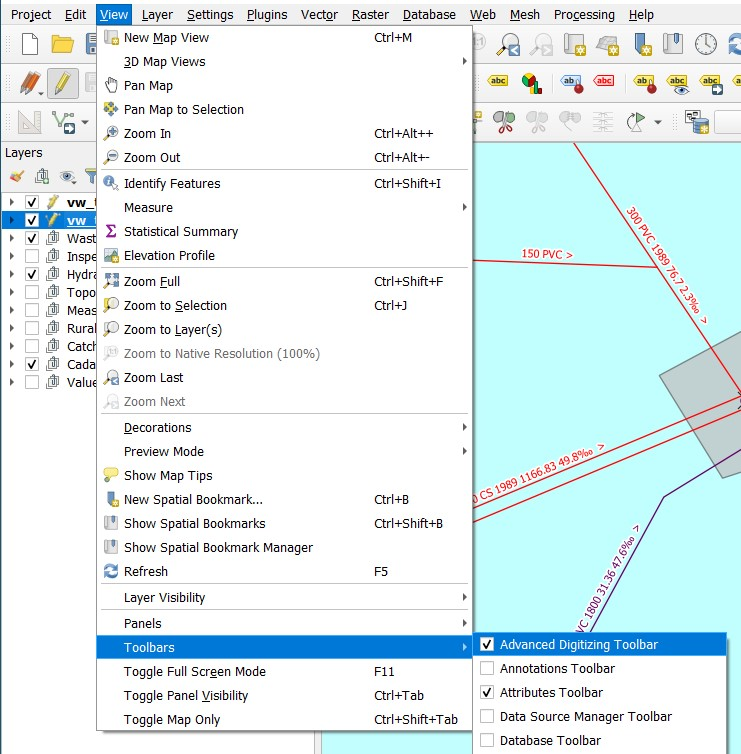
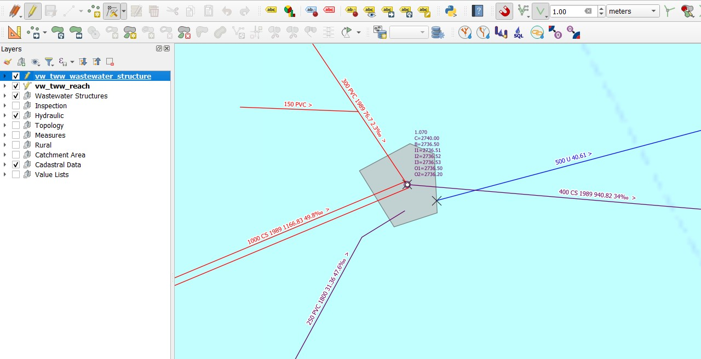
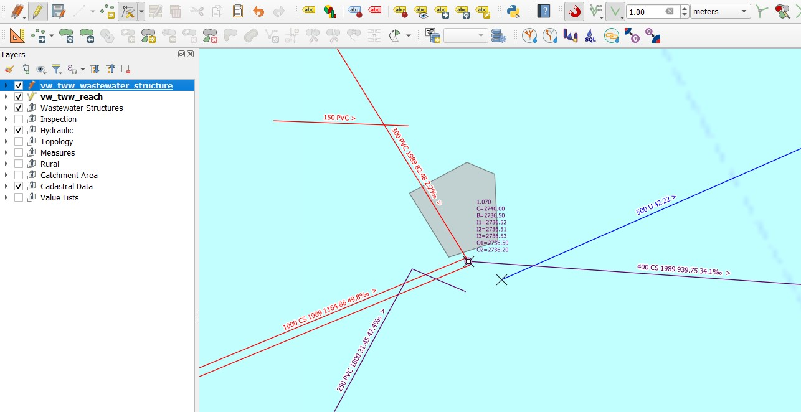
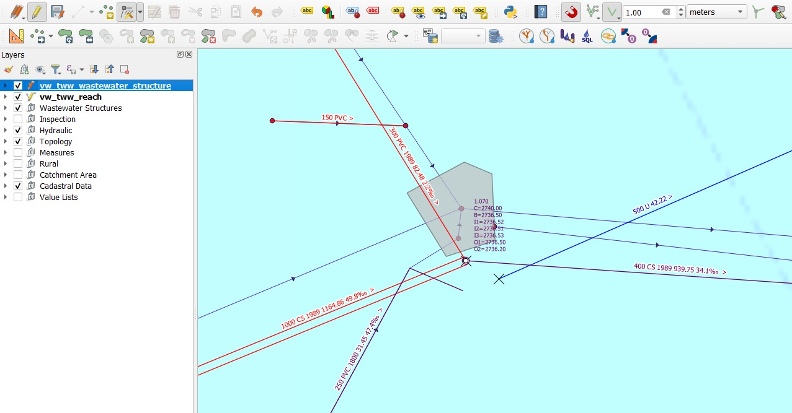
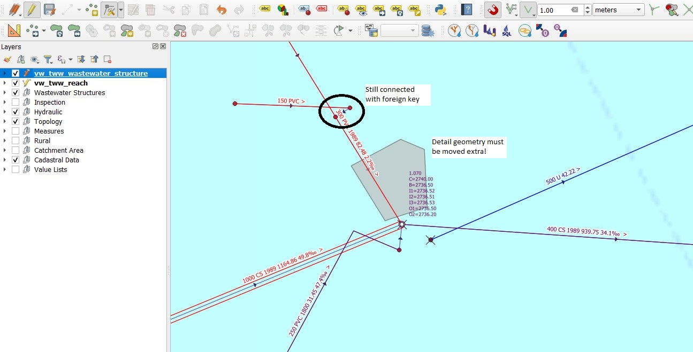

Déplacer des structures assainissement avec tronçons, couvercles et noeuds
Ceci constitue un guide sur la manière de déplacer des ouvrages d’assainissement avec leurs tronçons et regards, par rapport au simple déplacement du couvercle dans TWW.
Généralités
Il n’est pas rare que les regards soient numérisés une première fois avec une faible précision. Par la suite, les regards sont mesurés, et il devient nécessaire de déplacer l’ensemble de l’ouvrage d’assainissement (c’est-à-dire le(s) couvercle(s), le(s) regard(s) et les points de tronçon de tous les tronçons concernés) vers le point mesuré.
Il existe deux outils pour déplacer un regard : l’outil Vertex Tool (outil de sommet) et l’outil Move Feature (déplacer une entité). Il y a également une option très importante dans la barre d’outils d’accrochage (Snapping Toolbar) : activer l’édition topologique (Enable Topological Editing).

Les outils Vertex Tool et Move Feature fonctionnent de manière similaire pour les couches de points (simples).
Comme dans le modèle de données DSS, le couvercle, le regard et les points de tronçon ne sont pas connectés par leur position mais par des clés étrangères dans la base de données, TWW est conçu pour déplacer ensemble le(s) couvercle(s), le(s) regard(s) et les points de tronçon (et donc aussi les tronçons) selon la même distance. Cela signifie qu’il est préférable, dans plusieurs cas, de ne pas activer l’édition topologique.
Note
Vous devez activer la barre d’outils de numérisation avancée dans votre projet pour pouvoir sélectionner l’outil Move Feature.
{kind=link}

Déplacer un regard
Sélectionnez la couche vw_tww_wastewater_structure
Passez la couche en mode édition
Sélectionnez l’outil Move Feature (outil QGIS standard dans la barre d’outils de numérisation avancée) ou l’outil Vertex Tool
Désactivez le bouton Enable Topological Editing

Dans cet exemple, le regard a un couvercle, deux regards (wastewater nodes), quatre tronçons qui se terminent/commencent aux emplacements des regards, et un tronçon présentant un écart par rapport au regard connecté. Il y a également une géométrie de détail.
Cliquez avec le bouton gauche sur le point de l’ouvrage d’assainissement (wastewater_structure) que vous souhaitez déplacer, puis cliquez à nouveau au nouvel emplacement.

Le regard « 1.070 » a été déplacé. Le couvercle, les 2 regards et les 5 points de tronçon (tronçons) sont déplacés vers un nouvel emplacement. La distance entre les points reste la même. La géométrie de détail ne se déplace pas (couche wastewater_structure dans le groupe de couches Wastewater Structures). La géométrie de détail doit être déplacée séparément avec l’outil Move Feature. Il n’existe actuellement pas de bonne solution pour automatiser cette opération.
Pour visualiser le déplacement, il est recommandé de rendre visibles les couches Topology :

Pour mettre à jour la topologie, cliquez sur le bouton TWW - SQL

Note
Les tronçons connectés à l’un des tronçons déplacés restent connectés via la clé étrangère, mais ne se sont pas déplacés. Vous devez les corriger manuellement si nécessaire.
Déplacer un couvercle / un regard
Pour déplacer uniquement un couvercle ou uniquement un regard, travaillez avec la couche spécifique : Couvercle : groupe de couches Wastewater Structures / Structure Parts, couche vw_cover — Regards : groupe de couches Hydraulic, couche vw_wastewater_node
Sélectionnez la couche spécifique
Passez la couche en mode édition
Sélectionnez l’outil Move Feature (outil QGIS standard dans la barre d’outils de numérisation avancée) ou l’outil Vertex Tool
Désactivez le bouton Enable Topological Editing
Cliquez avec le bouton gauche sur le point du couvercle/regard que vous souhaitez déplacer, puis cliquez à nouveau au nouvel emplacement.
Pour mettre à jour la topologie, cliquez sur le bouton TWW - SQL (non nécessaire si seuls des couvercles ont été déplacés).
Déplacer un point de tronçon
Il n’y a pas de couche de points de tronçon dans le projet TWW. Vous modifiez les points de tronçon en tant que partie du tronçon, dans la couche vw_tww_reach.
Sélectionnez la couche vw_tww_reach
Passez la couche en mode édition
Sélectionnez l’outil Vertex Tool (l’outil Move Feature déplace le tronçon entier)
Désactivez le bouton Enable Topological Editing
Cliquez avec le bouton gauche sur le point de départ ou d’arrivée du tronçon que vous souhaitez déplacer, puis cliquez à nouveau au nouvel emplacement.
Pour mettre à jour la topologie, cliquez sur le bouton TWW - SQL
Note
Rendez la couche Topology/vw_network_node visible pour voir l’emplacement des points de tronçon (mais pas leurs attributs).
Tutoriel vidéo (obsolète)
Voir ce tutoriel vidéo (version QGIS 2) <https://vimeo.com/162978741>_